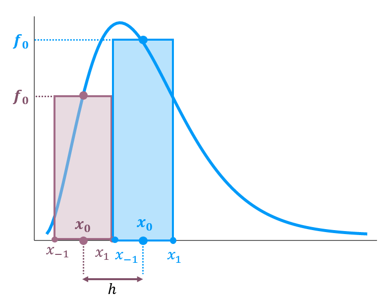

Integral
A Equação 10.3 diz quanta energia existe para cada comprimento de onda, mas e se eu te perguntasse qual a energia total? A resposta para essa pergunta é a Lei de Stefan-Boltzman.
Obtemos a energia total integrando sobre todos os comprimentos de onda - na verdade, é mais fácil integrar usando as frequências, \(E(\nu)\), do que com comprimentos de onda \(E(\lambda)\). Ao realizar essa operação, vamos encontrar novamente uma expressão sem solução analítica convencional, confira a referência [University of Washington Center for Quantitative Science 2020], na seção 8.3.2 Stefan-Boltzmann Law encontramos:
\[ E_{total} = \frac{8\pi h}{c^3} \left ( \frac{kT}{h}\right )^4\int_0^{\infty} \frac{x^3dx}{e^x - 1} \]
Nessa seção, nosso objetivo é usar e obter o valor da integral:
\[ I = \int_0^{\infty} \frac{x^3dx}{e^x - 1} \tag{12.1}\]
Talvez você estudará em um curso de Física Matemática como resolver esse tipo de integral, você usará técnicas de Integrais de Contorno, e o resultado será \(\pi^4/15\). Como essa integral é um problema clássico, a solução já esta na internet, como por exemplo aqui S [2012].
Calcularemos o valor de uma integral a lá Integrais de Riemann. Dividimos um intervalo \(x\) em segmentos discretos \([x_1, x_2, ..., x_N]\). Em seguida determinamos todos os \(f(x_i)\), com \(x_i = x_{0} + i\cdot h\), fornecendo assim, pontos para criar pequenos retângulos, cuja área é fácil de obter. Por último, somamos a área de todos os retângulos. Quanto menor o espaçamento \(h = x_{i+1} - x_{i}\), melhor nossa estimativa da integral.
Na Figura 12.1 vemos uma representação exagerada do procedimento. Dado um ponto \(x_0\), conseguimos definir um lado do retângulo como sendo o segmento \([x_{-1}, x_{1}]\). O outro lado será a altura \(f(x_0)\).

No entanto, podemos ser mais inteligentes, e não criar retângulos, mas sim trapézios. Isso trará resultados mais rápidos. A tabela a seguir fornecem algumas fórmulas que resumem diferentes métodos:
| Fórmula | Erro | |
|---|---|---|
| Trapézio | \(\int^{h}_{-h} = \frac{h}{2}( f(x_{-1}) + 2f(x_0) + f(x_{1}) )\) | (h^3)$ |
| Simpson | \(\int^{h}_{-h} = \frac{h}{3}( f(x_{-1}) + 4f(x_0) + f(x_{1}) )\) | \(\mathcal{O}(h^5)\) |
| Bode | \(\int^{h}_{-h} = \frac{2h}{45}( 7f(x_0) + 32f(x_{1}) + 12f(x_{2}) + 32f(x_{3})) + 7f(x_{4})\) | \(\mathcal{O}(h^7)\) |
Agora que você já possui as fórmulas, basta discretizar o espaço o domínio de integração. Como nossa função converge para zero rapidamente, não precisamos integrar até o infinito.
Defina uma função \(f(x) = x^3/(e^x - 1)\)
Crie um vetor com valores de \(x = [10^{-8}, 50]\) e discretize ele em \(N=2^{12}\) passos.
Calcule a Integral da Equação 12.1 usando os 3 métodos tabelados. Repare que a Figura 12.1 consegue representar os índices das Fórmula do Trapézio e Simpson, mas não para Fórmula de Bode. Você precisa de uma estrutura de repetição com passo 2 para fórmula do Trapézio/Simpson, e passo 4 para Bode.